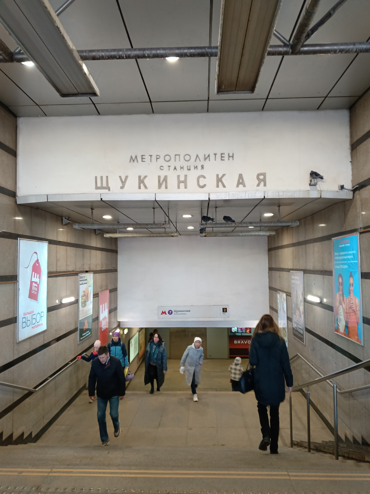

🎓 РОСБИОТЕХ
Волоколамское шоссе, 11
1🚇 Метро Сокол
1
Выход из метро
Выйдите на Волоколамское шоссе.
2
🚌 Автобус/трамвай
Сядьте на автобус м1, т70, е30, e30k, 412, 356.
3
Остановка «Гидропроект»
Выйдите на остановке «Гидропроект» — здание РОСБИОТЕХ рядом.
🚏 Остановка в 200 метрах от метро
Метро Сокол
Остановка
Волоколамское шоссе
Вход в РОСБИОТЕХ
2🚇 Метро Щукинская
1
Выход из метро
Выйдите из метро и найдите трамвайную остановку.
2
🚃 Трамвай
Сядьте на трамвай 15, 31, 30 или 28.
3
Остановка «Университет РОСБИОТЕХ»
Проедьте 5 остановок и выйдите на остановке «Университет РОСБИОТЕХ» или «Гидропроект».
4
🎯 Здание №11
Комплекс РОСБИОТЕХ находится рядом с остановкой.
🚃 Трамвай идёт прямо до университета

Метро Щукинская

Трамвай 15, 31, 28

Остановка РОСБИОТЕХ
Корпус РОСБИОТЕХ
3🚇 МЦК Стрешнево
1
Выход со станции
Выйдите из вестибюля МЦК Стрешнево.
2
🚶 Направление
Двигайтесь в сторону Волоколамского шоссе через парк.
3
🌳 Через парк
Пройдите по дорожкам парка Покровское-Стрешнево (живописный маршрут).
4
🎯 Здание №11
Выйдите к Волоколамскому шоссе — комплекс РОСБИОТЕХ будет перед вами.
🌳 Живописный маршрут через парк
МЦК Стрешнево
Парк Покровское-Стрешнево
Парковая дорожка
Выход к шоссе
4🚇 МЦК Панфиловская
1
Выход со станции
Выйдите из вестибюля МЦК Панфиловская.
2
🚶 Направление
Двигайтесь в сторону Волоколамского шоссе по улице Панфилова.
3
🛤️ По тротуару
Идите прямо около 800 метров по тротуару вдоль дороги.
4
🎯 Здание №11
Комплекс РОСБИОТЕХ будет справа по ходу движения.
🚶 Самый короткий пеший маршрут от МЦК
МЦК Панфиловская
Улица Панфилова
Путь к университету
Корпус РОСБИОТЕХ